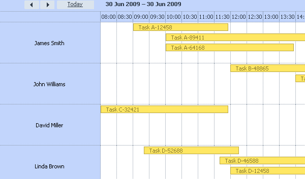
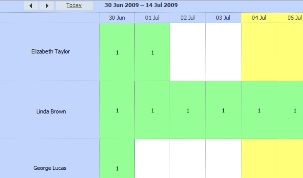
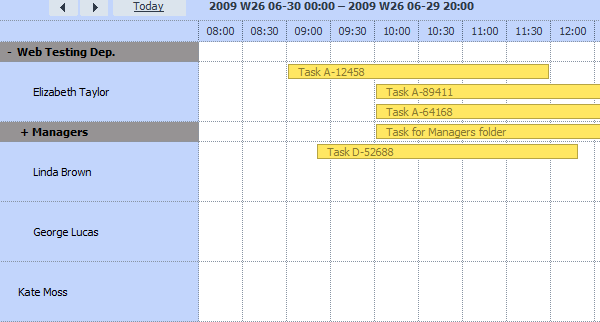

Timeline view
In timeline view, vertical scale presents event holders, while vertical scale is a configurable time-scale.
The view has 3 modes:
- Bar mode
- Cell mode
- Tree mode
To init this view, regardless of mode type, you need to make the following steps firstly:
1. Include extra files
<script src='./codebase/ext/dhtmlxscheduler_timeline.js' type="text/javascript" charset="utf-8"></script> <link rel="stylesheet" href="./codebase/ext/dhtmlxscheduler_ext.css" type="text/css" media="screen" title="no title" charset="utf-8">
2. Add new tab to the html template
<div class="dhx_cal_tab" name="week_tab" style="right:140px;"></div> <div class="dhx_cal_tab" name="timeline_tab" style="right:280px;"></div> <div class="dhx_cal_tab" name="month_tab" style="right:76px;"></div>
Then,define the desired mode.
Bar mode
In this mode, events look like lines.

To init such mode you need to
- define parameters of timeline
scheduler.createTimelineView({ name: "timeline", x_unit: "minute", x_date: "%H:%i", x_step: 1, x_size: 15, y_unit:[ {key:1, label:"James Smith"}, {key:2, label:"John Williams"}, {key:3, label:"David Miller"}, {key:4, label:"Linda Brown"} ], y_property:"section_id", render: "bar" });
- init scheduler
scheduler.init('scheduler_here',new Date(2009,5,30),"timeline");
Cell mode
In cell mode, events 'fill' with colour full cells.

To init such mode you need to
- define parameters of timeline
scheduler.createTimelineView({ name: "matrix", x_unit: "day", x_date: "%d %M", x_step: 1, x_size: 15, y_unit:[ {key:1, label:"Elizabeth Taylor"}, {key:2, label:"Linda Brown"}, {key:3, label:"George Lucas"}, {key:4, label:"John Williams"} ], y_property:"section_id", });
- init scheduler
scheduler.init('scheduler_here',new Date(2009,5,30),"matrix");
Hierarchical Data Structure (tree mode)
This is a novelty of 2.3 version. The feature makes possible to group names by creating multilevel folders. In addition to more convenient represantion, it allows you to specify an event not only for individual event holder but also for the whole folder (any level).

To init such mode you need to
- include one more extra file
<script src='../../codebase/ext/dhtmlxscheduler_treetimeline.js' type="text/javascript" charset="utf-8"></script>
- define parameters of timeline
scheduler.createTimelineView({ section_autoheight: false, name: "timeline", x_unit: "minute", x_date: "%H:%i", x_step: 30, x_size: 24, x_start: 16, x_length: 48, y_unit:[ {label:"Web Testing Dep.", open: false, children: [ {key:2, label:"Elizabeth Taylor"}, {label:"Managers", open: false, children: [ {key:4, label:"John Williams"}, {key:5, label:"David Miller"} ]}, {key:6, label:"Linda Brown"}, {key:7, label:"George Lucas"} ]}, {key:8, label:"Kate Moss"}, {key:9, label:"Dian Fossey"} ], y_property: "section_id", render: "tree", folder_events_available: false, dy:60 });
- init scheduler
scheduler.init('scheduler_here',new Date(2009,5,30),"timeline");
Except of monstrosity list of parameters, used in createTimelineView, it seems rather simple.
Parameters of createTimelineView
- name - the name of a view, the same as the name of the tab in html template ( you can have few different timeline, with different name , at the same time )
- render - the name of a mode (“bar”, “cell” or “tree”). This parameter is reserved for future updates
- section_autoheight - assigns automatic height adjustment of the cells
- dy - the minimal height of cells (if section_autoheight parameter has value 'false', the height of the cells will be equal to dy, otherwise the height of the cells will be increase to fill all free space).
'Tree mode' personality:
- folder_events_available - need to be set as “true”, if you want to have the possibility to specify an event not only for individual event holder but also for the whole folder (any level).
- folder_dy - the height of folders in pixels (nonapplicable for cells with folder names)
X scale
- x_unit - size of units on X scale ( can be minute, hour, day, week, month, year )
- x_step - size of single scale step ( size defined in “x_unit”s)
- x_size - how must steps need to be shown
- x_start - value of minimal step
- x_length - how much x_step need to be used to fill the whole day ( it is necessary only if you are using minute or hour as x_unit )
Time scale from 8AM to 8PM, with 30 minutes step
{ x_unit:"minute", x_step:"30", x_size:"24", // (8PM - 8AM)/30min x_start:"16", // 8AM/30min x_length:"48" // 24/30min }
Time scale for two next days with 2hours step
{ x_unit:"hour", x_step:2, x_size:24 // 2days/2hours }
Y scale
- y_property - name of event's property
- y_unit - list of options for the property
Templating
All templates need to be redefined after createTimelineView call
In below snippets, you need to replace “timeline” with actual view name
css class for x-scale header
scheduler.templates.timeline_scalex_class = function(date){ if (date.getDay()==0 || date.getDay()==6) return "yellow_cell"; return ""; }
format of date in the x-scale
scheduler.templates.timeline_scale_date=function(date){ var format = scheduler.date.date_to_str("%D, %d.%m.%Y"); return format(date); }
All rights reserved.